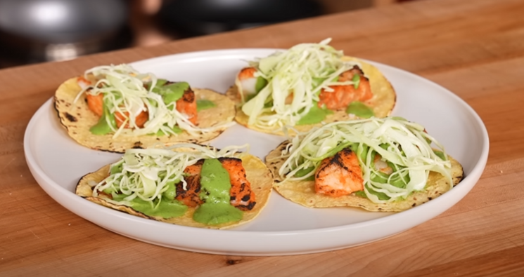

Gochujang Fish Tacos w/ Roasted Jalapeno Salsa


Description
A healthy 390 calorie taco dish with 11g of fat, 42g of protein, and 30g of carbs. An essential for anyone looking to go on a diet while still eating well.
Single serving
- 4 Mission 25 Calorie Yellow Corn Tortillas
- 6 oz (170g) cod, evenly divided between four tacos
- ½ tablespoon (8g) sauce, per taco
- 1 tablespoon (15g) slaw, per taco
Ingredients
- Gochujang Fish:
- 1.25 lbs (567g) cod, cut into 2.5-inch rectangles
- 1 tablespoon (20g) gochujang
- 2 tablespoons (30g) Sriracha
- 1 tablespoon (15g) shirodashi
- 1 tablespoon (15g) water
- 1 tablespoon (15g) rice vinegar
- 1 teaspoon (5g) grated ginger
- 1 teaspoon (5g) grated garlic
- Salt to taste
- Roasted Jalapeno Sauce:
- 3 jalapeños, charred and steamed
- 4 cloves garlic
- 1/4 cup (55g) nonfat cottage cheese
- 1-2 tablespoons (15-30g) lemon juice
- 1/2 bunch cilantro
- 1-2 tablespoons (20-40g) nonfat yogurt
- Salt to taste
- Slaw:
- 1/2 head green cabbage, thinly sliced
- 2 tablespoons (30g) light mayo
- 1 tablespoon (15g) roasted jalapeno sauce
- Flakey salt to taste
Steps
- Fish:
- In a medium mixing bowl, whisk together the gochujang, Sriracha, shirodashi, water, rice vinegar, grated ginger, grated garlic, and a generous pinch of salt. Add in your sliced fish and toss to combine. You can either cook immediately or cover and marinate in the refrigerator overnight.
- Lay your marinated fish out on a wire rack-lined sheet tray and place under the broiler set to high. Cook 6-10 minutes until nicely charred and just cooked through. Keep a close eye on the fish so it does not burn.
- Sauce:
- To a blender, add your jalapenos, garlic, nonfat cottage cheese, a pinch of salt, and 1-2 tablespoons lemon juice. Blend on high until as smooth as possible, gradually adding small amounts of water to loosen if necessary. Add the cilantro and nonfat yogurt. Blend on high until smooth. Season to taste with salt.
- Slaw:
- To a large mixing bowl, add cabbage, low fat mayo, and one tablespoon of your roasted jalapeno sauce. Toss to combine.
- Season with flakey salt just before serving to prevent sogginess.
- Assembly:
- Heat 4 corn tortillas over a direct open flame, flipping occasionally, until hot and slightly charred.
- Place your fish down on the tortillas, drizzle with the roasted jalapeno sauce, top with slaw and finish with flakey salt. Serve and enjoy.